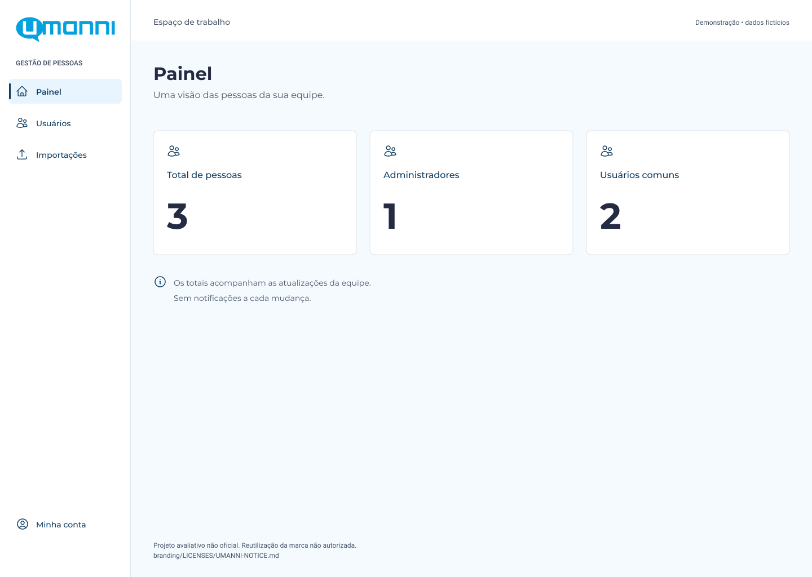
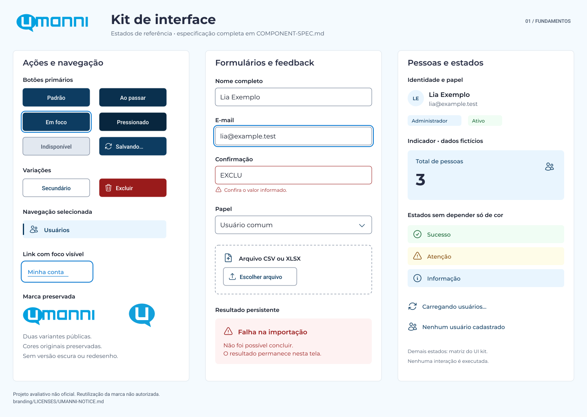
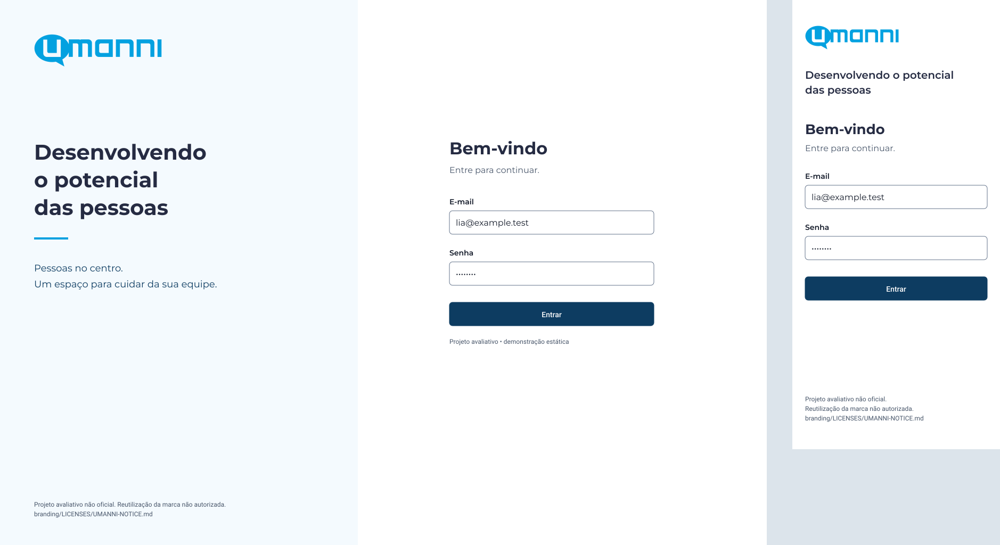
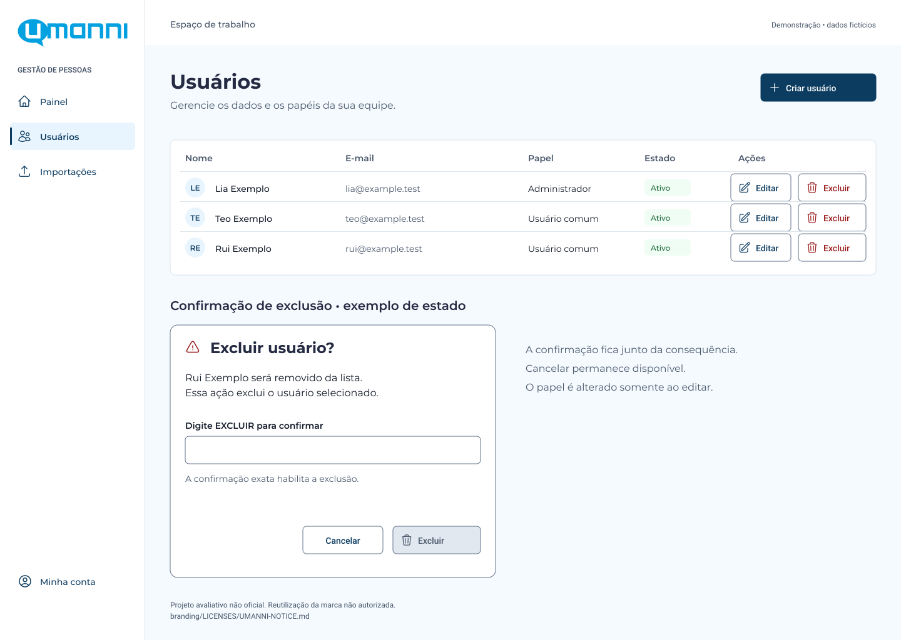
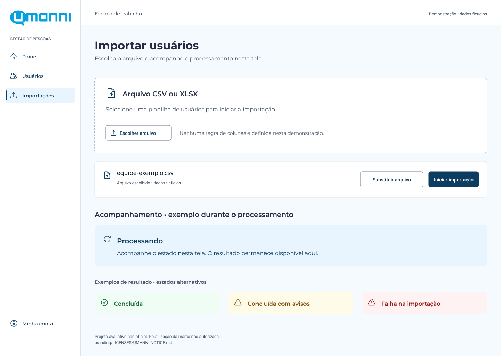
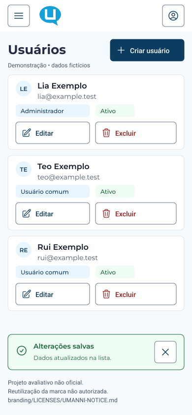

01 / VISÃO GERAL
IDENTIDADE · V1Uma identidade.
Todos os detalhes.
Da marca às telas: uma referência para consultar, visualizar e construir com consistência.

{kind=link}
{kind=link}
Este acervo reúne a entrega visual estática revisada. As imagens abaixo continuam sendo pranchas sem interação; o protótipo navegável é uma demonstração separada, com dados fictícios e sem comportamento de produção.
02 / MARCA
A origem vem primeiro.
Assinatura e símbolo públicos preservados, sem redesenho, recoloração ou novas variantes.
{kind=link}
{kind=link}
{kind=link}
Os dois arquivos públicos têm azuis diferentes. Essa diferença foi preservada. O favicon é um recurso técnico, não uma terceira variante da marca.
03 / CORES
Reconhecimento com legibilidade.
O azul conecta a identidade. Os tons funcionais dão contraste à interface. Estes valores são decisões do projeto, não um manual oficial da Umanni.
Marca
#03A1E0Identidade e acentos
Primária
#0D3C61Ações e navegação
Texto
#111827Leitura principal
Superfície
#F4FAFEFundo de apoio
Azul não é sinônimo de botão.
Branco sobre #03A1E0 tem contraste de 2,93:1: não atende a texto comum. Ações usam azul escuro com texto branco.
04 / TIPOGRAFIA
Clareza em cada palavra.
Montserrat
PrincipalAa
Uma leitura clara,
do início ao detalhe
Títulos, navegação e conteúdo.
400 regular · 500 média
600 seminegrito · 700 negrito
Roboto
UtilitáriaAa
Detalhes que
organizam a leitura
Metadados e informação compacta.
400 regular · 500 média
600 seminegrito · 700 negrito
Fontes variáveis originais, com licenças SIL OFL 1.1 preservadas. Roboto utiliza largura de 100%. A hierarquia completa está no guia de marca.
05 / COMPONENTES
Um vocabulário compartilhado.
Botões, campos, navegação e estados de feedback reunidos em uma prancha. É uma especificação visual, sem componentes de aplicação implementados.

Prancha de componentes
1440 × 1024 px · prévia estática
{kind=link}
{kind=link}
06 / TELAS
A identidade em contexto.
Cinco composições com conteúdo em português e dados fictícios. Abra os arquivos completos para inspecionar os detalhes; as prévias não têm interação.

01 · Entrada responsiva
Desktop 1440 × 1024 + celular 390 × 844 px
Arquivo conjunto: 1878 × 1024 px
{kind=link}
{kind=link}
02 · Painel
1440 × 1024 px

03 · Usuários
1440 × 1024 px · inclui estado de exclusão
{kind=link}
{kind=link}

04 · Importação
1440 × 1024 px · estados alternativos
{kind=link}
{kind=link}

05 · Usuários no celular
390 × 844 px
{kind=link}
{kind=link}
As pranchas de usuários e importação apresentam exemplos legendados de estados alternativos, não situações simultâneas. Não há tema escuro: faltam informações públicas suficientes para defini-lo com fidelidade.
07 / DOCUMENTAÇÃO
Cada decisão tem uma referência.
Documentação em inglês. Os links abrem os arquivos-fonte preservados; a forma de exibição ou download depende do navegador.